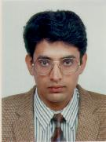

WEEKEND THOUGHTS # 34

The WEEKEND THOUGHTS column is proud to announce that Amitabh Mishra from College Station, Texas has joined our team. He has been a valuable contributor to this forum in the past and we look forward to listen more from him in the future. On behalf of Ornet and this column, we thank him for his kind consent and extend our hearty welcome.
EDITORS
Hi All,
Another weekend - another nice article. The thoughts are pleasant and the contribution is from one of our freshest members of the net and the Oriya community in USA - from Cookeville, Tennessee, we are proud to present Dipak Rath and his memoirs of his UCE days.
STATUTORY WARNING:
This may make some ex-UCEans very nostalgic :-)
Finally, the review is another eulogy of his UCE days from S.K.Mohanty from California.
Enjoy and have a nice weekend.
Surjit Sahoo (11/17/95)
(ssahoo@ingr.com)
Name: Dipak Rath
Age: 23yrs
Currently studying M.S. in electrical engg
Present Address: TTU Box#12383, Cookeville, TN 38505
Back Home:
School Attended: Rajkumar College(Raipur)
College Attended: Univ. College of Engg.(Burla)
Address:
c/o Mr S.K.Rath
Sr.General Manager(Project)
I.M.F.A, Bomikhal, Bhubaneswar,Orissa-751010
WALKING DOWN MEMORY LANE
I arrived here in USA on the 24th August this year and since then have gone down this lane innumerable times. To suppress the thoughts attached to my school and college days seems almost next to impossible. For a couple of weeks after my arrival I used to wake up almost expecting to hear and see those vocal UCE guys. But, soon I would realize that I have come very far away, to be a part of that again. Those were the days when we would have KHATI for long hours which would virtually cover anything and everything under the sun. Getting up late in the morning had become more than a trend and then rushing to the class just to silently sneak into the class (not always). Sometimes I wonder how different it is here! I strongly believe that no engineer who has done his or her engineering in India will ever forget the legendary raging days. Those were the days of full sleeve shirt, short hair, 24 hours in shoes and living in constant fear. I remember when I was in my 1st year in Burla(south hostel) my roommates and I would ask the wardboys to lock our room door from outside just to avoid any senior barging into our room and raging us. Then late in the night when they are all gone, all of us would sit in one room and enjoy listening to each other's raging experiences. OH BOY! that was something.
Then in the subsequent years freedom started becoming a reality. There was nothing like my final year stay in Burla. We had a palatial and marvelous hostel to stay in (new hostel). I can never lose possession of the precious memories of the KHATI on the new hostel lawn which ranged from question of GATE examination to the latest hindi pop. High up in my mind are the memories of our cultural festivals -- 3 to 4 days of nonstop entertainment and fun with the whole college decorated with lights. Everyone's spirits would be reaching dizzy heights to win the hefty cash prizes at stake in the countless competitions.
Most sort after hours of the day were the evenings when the Burla market would be swarming with Engg. guys. The whole gang would be split into groups in the two or three hotels (but we were proud of them) we had in the market. This time the khatti will be over the "chai" and "singada".
This is just an iota of the rich treasure of memories of those gem of days I am have shared with you and sincerely hope that you will like it, especially an ex-UCEIAN who will read this.
A nice article , takes me back to the good old days of Engineering Hostel life. Every campus has its own charm, so was the Engineering Hostel life in Burla. The KHATIs, the trips to REMED Dhaba, the cycling to GOSALA for those king size Rasogola is really something different. As the author has said , as an ex-UCEIAN most of my memories of the campus life of Burla are still as clear as pictures.
Time passes, Life changes but these feelings have remained as sweeter as brighter as we have seen it down the memory lane. In the walk of life we all achieve something, but the degree of satisfaction has hardly changed. N number of (varies from 20 to 200) hostel mates struggling to watch the cricket match on a B&W TV was more enjoyable than watching NFL live on a big-screen TV. Cycling all the way to REMED to have a quarter plate of chicken dopiaza with two pieces of Nan (was costing exactly Rs 10 at that time) is(was) any time better than a grand buffet.
Yes, the author has spoken about the brighter side of the engineering hostel life, so am I. Going down the memory lane why bother looking at the other side.
Debasmita Misra (misra@s1.arc.umn.edu)
Surjit Sahoo (ssahoo@ingr.com)
Sidhartha Mohanty (sid@aluxs.att.com)
Amitabh Misra (amishra@cadev6.intel.com)
Your comments are always welcome...

 Dipak Rath
Dipak Rath

Ride back to Home Page...
![[IMAGE]](../../wt/rath.gif)